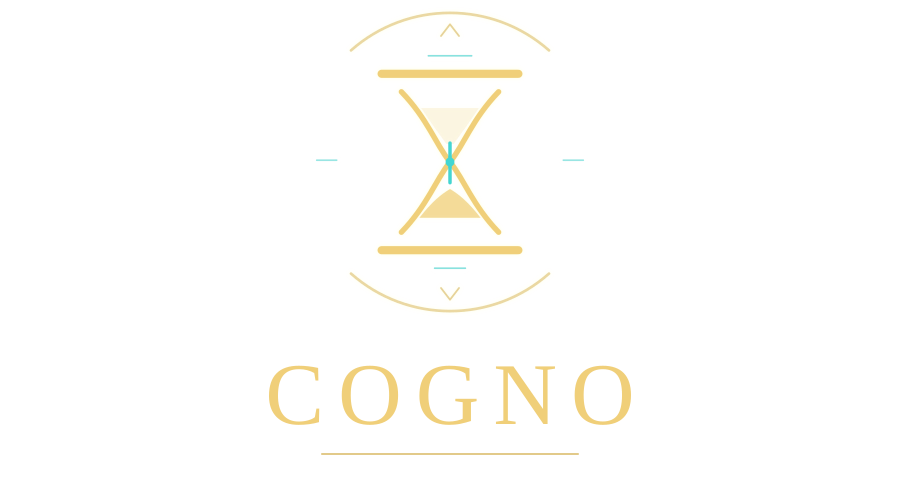

Hourglass Logo Direction
A cleaner Cogno identity built around survival time, history, and ancient ritual: one primary logo, one compact mark, and a title-screen preview.
Minimal / Marked / Vector
Why Hourglass
It ties survival timer, history, ruins, and inevitability into one shape. The mark explains the game faster than the eye did.
Why Minimal
Thin ritual lines, one cyan sand accent, and no busy illustration. It should stay sharp on mobile and still feel premium.
How It Scales
The standalone mark can become app icon, loading emblem, locked-stage badge, or a small title ornament inside the game UI.